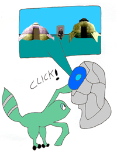
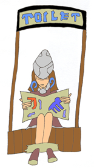

Seeker Technology
Seeker Light Device
(A mysterious light device hangs from the ceiling.)
Wise Old Coolia: This is ancient technology that the Seekers excavated. It mysteriously emits light.
Young Energetic Coolia: I can emit light too, isn't it cool!
Wise Old Coolia: Huh, what was that, my eye sight isn't what it used to be.
Young Energetic Coolia: Oh, never mind! |
This ancient device emits light. |


Seeker Medical Device
(A strange medical device can be seen in the distance.)
Wise Old Coolia: This is another mysterious Ancient Age technology. The Seekers use these medical devices to heal wounds or injuries.
Young Energetic Coolia: I'm feeling kind of sick, I think I ate too many Zaal Nuts. Can I use that medical device?! |
A seeker medical device from the Ancient Age. |
The device can heal the sick. |
How it works is a mystery. |


Seeker Binoculars
(The two Coolias observe these seeker binoculars.)
Wise Old Coolia: The Seekers use these binoculars to see far distances. They come in handy for spotting enemy attacks.
Young Energetic Coolia: Yeah, those look pretty cool! |
Gash uses these binoculars to look off into the distance. |


Ancient Viewing Device
( The Seekers viewing device can be seen in the distance.)
Wise Old Coolia: This is the most important Ancient Age technology the Seekers posses. It lets them view various locations throughout the world. This viewing device allows the seekers to study and observe various monsters and ruins, without putting themselves in any danger.
Young Energetic Coolia: Hey, lets turn it on, I want to see what all of the Hunters are doing over at the caravan!  Young Energetic Coolia: Now, how does this thing work? (Click) It turned on! Hey, it's the caravan! Who is that siting in the middle of the tents? It kind of looks like... Raul!
Wise Old Coolia: Zoom in closer! (The machine zooms in on Raul.)  Raul: Damn, I must be constipated!
Young Energetic Coolia: OKAY, I DID NOT WANT TO SEE THAT!
Wise Old Coolia: HURRY, TURN IT OFF!!
|
Gash, turns on the viewing device. |
It emits a strange blue light. |
The device brings up a picture of the Tower. |
This viewing machine is the most advanced technology the Seekers have. They can view any place in the Panzer Dragoon world. |